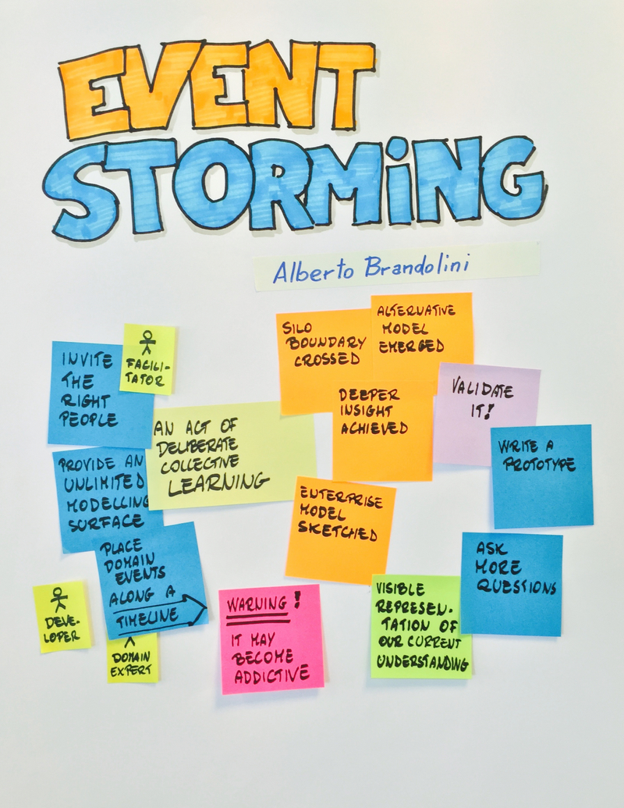

Scott Wlaschin
Porre attenzione:
Partizionare il problema in sottodomini
Dominio: area di cui l'utente è esperto
Creare un modello per ciascun sottodominio
Modello: astrazione che coglie gli aspetti rileventi del problema
Sviluppare un Ubiquitous Language condiviso
NON si parla di:

Acquisisci Input (side-effect)
Valida Dto (pure)
Business (pure)
Emetti Output (side-effect)
std::vector<PropostaDto>[{
"codice": 1000,
"codice_relatore": "yv",
"titolo": "Esperimenti di DDD in C++",
"sommario": "Da Event Storming a ...",
"disponibilita": {
"tipo": "date_specifiche",
"date_specifiche": [ "2019/9/12" ]
}
}]
class PropostaDto {
public:
static auto CreaElenco(string const &json)
-> expected<vector<PropostaDto>, Errore>;
// getters ...
private:
int codice_;
string codiceRelatore_;
string titolo_;
string sommario_;
TipoDisponibilita tipoDisponibilita_; // enum class
optional<vector<year_month_day>> dateDisponibilita_;
optional<year_month_day> dataInizioDisponibilita_;
};enum class TipoDisponibilita {
SempreDisponibile,
DateSpecifiche,
DopoUnaData
};class Errore {
public:
explicit Errore(string testo)
: testo_(move(testo)) {}
auto testo() const
-> string { return testo_; }
private:
string testo_;
friend auto operator<<(ostream &os, Errore const &err)
-> ostream &;
};std::cronodate::year(2019)/2/30using namespace date;
auto d = year(2019) / 9 / 12;
d.ok(); // true
d.year(); // year(2019)
d.month(); // month(9)
d.day(); // day(12)using namespace std; // tl
auto a = optional<int>(5); // make_optional(42)
a.has_value(); // true
*a; // 5
auto b = optional<int>(nullopt);
b.has_value(); // false
*b; // Undefined Behaviour
b.value_or(11); // 11using namespace std;
class Tweet;
auto leggiIndirizzo() -> optional<string>;
auto componiTweet(string const &indirizzo, string const &testo)
-> optional<Tweet>;
auto inviaTweet(const Tweet& tweet) -> bool;auto notificaConTweetCpp17() -> bool
{
auto indirizzo = leggiIndirizzo();
if (!indirizzo)
return false;
auto tweet = componiTweet(*indirizzo, "tweet di notifica");
if (!tweet)
return false;
return inviaTweet(*tweet);
}auto notificaConTweetTl() -> bool
{
auto res = leggiIndirizzo()
.and_then([](string const& indirizzo) {
return componiTweet(indirizzo, "tweet di notifica");
})
.map(inviaTweet);
return res.value_or(false);
}using namespace tl;
enum class Err { FileNonTrovato, Generico, Conversione };
auto a = expected<int, Err>(5);
a.has_value(); // true
*a; // 5;
// auto b = tl::expected<int, Err>(
// tl::unexpected(Err::Conversione));
tl::expected<int, Err> b
= tl::make_unexpected(Err::Conversione);
b.has_value(); // false;
b.error(); // Err::Conversioneusing namespace tl;
class Errore;
class Tweet;
auto leggiIndirizzo() -> expected<string, Errore>;
auto componiTweet(string const& indirizzo, string const& testo)
-> expected<Tweet, Errore>;
auto inviaTweet(const Tweet& tweet) -> bool;// expected<std::monostate, Errore>
auto notificaConTweetExp() -> optional<Errore> {
auto res = leggiIndirizzo()
.and_then([](string const& indirizzo) {
return componiTweet(indirizzo, "tweet di notifica");
})
.map(inviaTweet);
if (!res) {
return nullopt;
}
return res.error();
}expected<T,E>, optional<T>, vector<T>.and_then(), .map() o template appositiDisponibilitaRelatore:
auto intOrStr = variant<int, string>(15);
auto n = get<int>(intOrStr); // 15
auto s = get<string>(intOrStr); // exceptiontemplate<<class... Ts> struct overloaded : Ts... {
using Ts::operator()...;
};
template<<class... Ts> overloaded(Ts...)->overloaded<<Ts...>;
visit(overloaded{
[](int num) { cout << num + 1 << endl; },
[](std::string const& str) { cout << str << endl; },
}, IntOrStr);std::vector